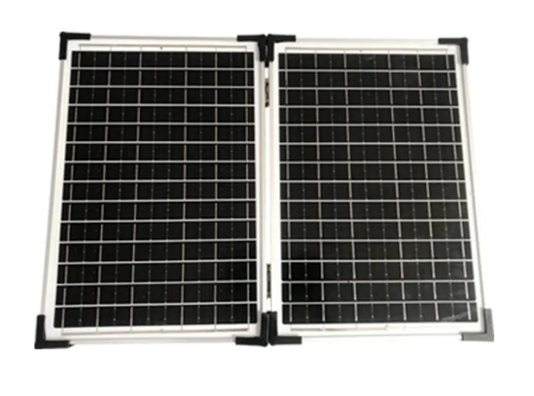

A portable power station becomes far more valuable when it can be recharged from solar energy. The right solar panel extends runtime during blackouts, supports off-grid use, and reduces dependence on the grid or generator fuel. For importers and distributors, selling a power station with a compatible solar panel also increases average order value and gives customers a complete energy solution.
This guide explains how to choose the right solar panel for portable power stations and what to look for when sourcing solar panels for B2B markets.
Solar panel wattage determines how much power the panel can produce under full sun. A higher wattage panel usually charges the power station faster, but only if the power station can accept that much solar input.
| Power Station Class | Recommended Panel | Typical Charge Time |
|---|---|---|
| 300Wh station | 60W-100W | 3-5 hours full sun |
| 500Wh station | 100W-200W | 3-5 hours full sun |
| 1000Wh+ station | 200W or two 100W panels | 5-7 hours full sun |
Always check the power station's solar input limit. If a station accepts a maximum of 120W, connecting a 200W panel may not charge faster and can waste the extra panel capacity. For high-capacity models, using two 100W panels in parallel is often more flexible than one large panel.
Monocrystalline solar panels are the best option for portable power stations. They offer higher efficiency, typically around 20%-23%, and perform better in bright conditions than older polycrystalline panels. For B2B markets in Africa and the Middle East, monocrystalline panels deliver more useful energy from the same panel size.
Folding solar panels are the preferred choice for portable power stations because they are easier to transport, store, and ship. A 100W folding panel can be carried like a briefcase and set up in minutes. Rigid panels are better for permanent rooftop or fixed installations.
For importers, folding panels are easier to bundle with a power station and create a higher-value retail package. SunVolt Energy offers foldable panels from 30W to 200W that work with our full power station range.

Check the connector type before ordering. Most portable power stations use DC, Anderson, XT60, or MC4 connectors. A mismatched connector creates friction for the customer and increases support requests. The easiest solution is to bundle panels and power stations from the same manufacturer, so connectors, voltage, and charging limits are already matched.
Our solar panel collection is designed to work directly with SunVolt power stations, reducing compatibility issues for your customers.
The most profitable sales model is to sell a power station and solar panel as one backup power kit. For example, a 500Wh station bundled with a 100W solar panel gives the customer a complete off-grid solution and gives the importer a higher-ticket product with stronger repeat-purchase potential.
See our B2B and D2C pricing playbook for how to structure profitable solar power bundles.
The most common sourcing mistake is matching panels by wattage alone and ignoring the power station's solar input limit. A station that accepts 120W of solar input cannot use a 200W panel at full output, so the extra panel capacity is simply clipped. Before you finalise a bundle, check the station's maximum solar input voltage and wattage, then pair it with a panel that stays within those limits.
For high-capacity stations, two smaller panels in parallel often work better than one large panel. Parallel panels are easier to pack, easier to angle toward the sun, and more tolerant of partial shading than a single oversized panel.
A 100W to 200W monocrystalline panel is the practical range. Confirm the station's solar input limit first.
It may work but is often wasteful. If the input is limited to 120W, a 200W panel will be clipped and will not charge faster.
Monocrystalline, because of its higher efficiency and strong performance in bright sunlight.
A bundle solves the customer's real problem, raises order value, and avoids the connector and voltage mismatches that cause support requests.
SunVolt Energy supplies factory-direct portable power stations and matching solar panels for distributors, importers, and OEM brands. We can provide samples, certification documents, custom packaging, and wholesale pricing. Request a solar panel wholesale quote.
Tell us your target market and quantity. We will recommend the best power station and solar panel bundle.
Chat on WhatsApp